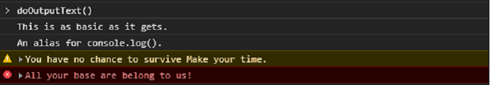

Debug Console
More than just console.log()
- Writing output
- Measure and Count Executions
- Tracing and Assertions
- Viewing data objects
Writing output
Constant strings
function doOutputText() {
console.log("This is as basic as it gets.");
console.info("An alias for console.log().");
console.warn("You have no chance to survive Make your time.");
console.error("All your base are belong to us!")
}

Formatted strings

Simple section
Simple sections does not include title decorations